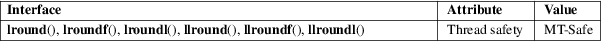

lround, lroundf, lroundl, llround, llroundf, llroundl − round to nearest integer
Math library (libm, −lm)
#include <math.h>
long
lround(double x);
long lroundf(float x);
long lroundl(long double x);
long long
llround(double x);
long long llroundf(float x);
long long llroundl(long double x);
Feature Test Macro Requirements for glibc (see feature_test_macros(7)):
All functions
shown above:
_ISOC99_SOURCE || _POSIX_C_SOURCE >= 200112L
These functions round their argument to the nearest integer value, rounding halfway cases away from zero, regardless of the current rounding direction (see fenv(3)).
Note that unlike the round(3) and ceil(3), functions, the return type of these functions differs from that of their arguments.
These functions return the rounded integer value.
If x is a NaN or an infinity, or the rounded value is too large to be stored in a long (long long in the case of the ll* functions), then a domain error occurs, and the return value is unspecified.
See math_error(7) for information on how to determine whether an error has occurred when calling these functions.
The following
errors can occur:
Domain error: x is a NaN or infinite, or the rounded
value is too large
An invalid floating-point exception (FE_INVALID) is raised.
These functions do not set errno.
For an explanation of the terms used in this section, see attributes(7).

C11, POSIX.1-2008.
glibc 2.1. C99, POSIX.1-2001.
ceil(3), floor(3), lrint(3), nearbyint(3), rint(3), round(3)